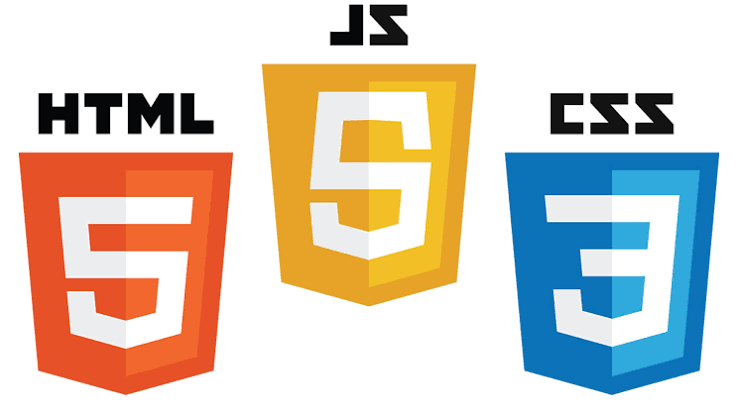

Transfert de fichiers client / serveur
Application client-serveur permettant d'envoyer et de recevoir des fichiers texte et multimédia (images, audio, vidéo) à travers un réseau.
Python · Sockets · Client-serveur
Étudiant en administration des réseaux, systèmes et bases de données. J'apprends à construire des infrastructures, puis à les attaquer et les défendre pour mieux les protéger.
Je suis étudiant en Licence 2 d'informatique à l'INSI (Institut National Supérieur d'Informatique), à Madagascar. Passionné par les réseaux et la cybersécurité, je construis mes compétences avec des laboratoires, des compétitions et des projets.
Mon parcours ARSB me donne une base solide : on ne protège bien que ce que l'on sait administrer. Mon objectif est de devenir pentester ou ingénieur sécurité. Je suis curieux, rigoureux et déterminé, et j'aime résoudre des problèmes en équipe.
Adressage IP, connexion et configuration de base de routeurs, de switchs et de PC pour construire un réseau local. Outils : Packet Tracer, Wireshark.
Bases du shell Linux, utilisation de Kali Linux et de Windows, virtualisation avec VirtualBox.
Introduction à la méthode Merise (modélisation des données). Utilisation de bases relationnelles : MySQL, MariaDB et SQLite.
Bases du test d'intrusion avec Nmap et Metasploit, dans un cadre de laboratoire et de compétition. Sécurisation de l'accès SSH sous Kali Linux et Windows.
HTML, CSS et JavaScript pour le web, Java pour les applications, PHP avec Symfony, bases de Python et de C.
Application client-serveur permettant d'envoyer et de recevoir des fichiers texte et multimédia (images, audio, vidéo) à travers un réseau.
Laboratoire de test d'intrusion : une machine Kali Linux (installée sur ma machine réelle) attaque Metasploitable 2, une machine virtuelle volontairement vulnérable. J'ai aussi sécurisé l'accès SSH de Kali Linux et de Windows.
Notre équipe a terminé à la 3e place. Mon rôle : l'intrusion système, c'est-à-dire repérer les services exposés des machines cibles et exploiter leurs failles pour y accéder.

Site web réalisé pour comprendre et mettre en pratique l'utilisation de JavaScript.

Application de gestion des employés développée en Java.

Stage, projet, mentorat ou simple échange : je réponds à toute proposition liée à l'informatique et à la sécurité.